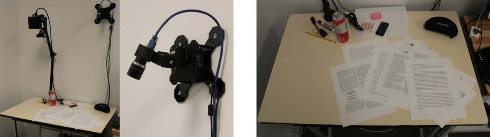
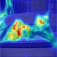
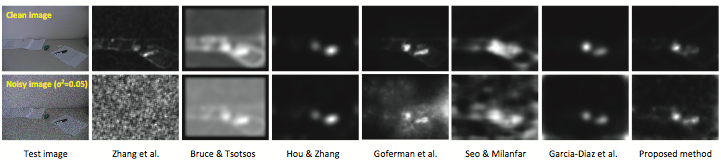
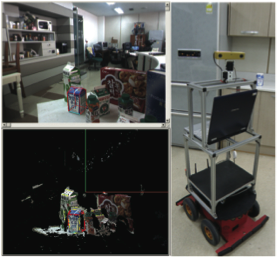
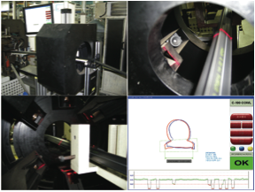
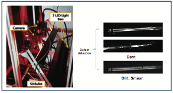

 We present a novel system for detecting and capturing paper documents on a tabletop using a 4K video camera mounted overhead on pan-tilt servos. Our automated system first finds paper documents on a cluttered tabletop based on a text probability map, and then takes a sequence of high-resolution frames of the located document to reconstruct a high quality and fronto -parallel document page image. The quality of the resulting images enables OCR processing on the whole page. We performed a preliminary evaluation on a small set of 10 document pages and our proposed system achieved 98% accuracy with the open source Tesseract OCR engine.
|  |  |
 This research presents a novel probabilistic recognition framework for recognition and pose estimation of 3D objects in real environment. The proposed approach features 1) the automatic selection and collection of an optimal set of evidences based on in-situ monitoring of environmental variations, 2) the derivation of multiple interpretations, as particles representing possible object poses in 3D space, and the assignment of their probabilities based on matching the object model with evidences, and 3) the fusion of interpretations in time with the additional evidences obtained from a sequence of images.
This research describes a novel approach that accurately detects depth edges with cluttered inner texture edges effectively ignored. We strategically project structured light and exploit distortion of the light pattern in the structured light image along depth discontinuities to reliably detect depth edges. In practice, distortion along depth discontinuities may not occur or be large enough to detect depending on the distance from the camera or projector. We present methods that guarantee the occurrence of the distortion along depth discontinu- ities for a continuous range of object location. Experimental results show that the proposed method accurately detects depth edges of shapes of human hands and bodies as well as general objects.
 This plastic tube profile monitoring system is a series of 6 calibrated camera-laser units to monitor deformation. Projecting a line of laser light onto a three- dimensionally shaped surface produces a line of illumination that appears distorted, and can be used to reveal surface profiles of a part of plastic tube from each camera-laser unit. The individual surface profiles are combined to obtain the whole profile of plastic tube.
 Dent, dirty and smear on the case of bullet are detected by projecting a stripe light patterns onto the surface of the bullet and observing distortion in the patterns.